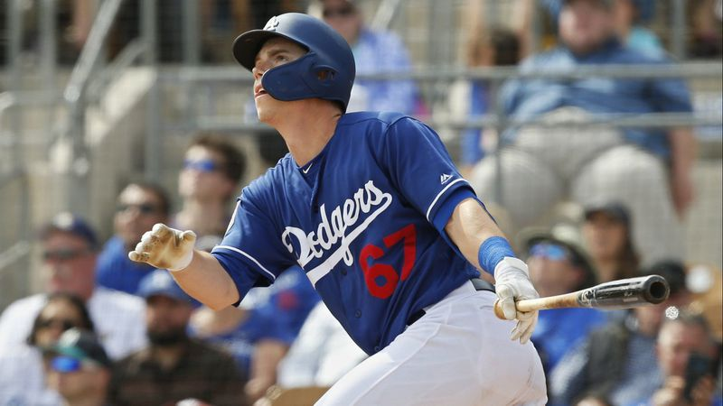

Scouting grades: Hit: 45 | Power: 50 | Run: 55 | Arm: 60 | Field: 60 | Overall: 55
One of four Atlantic Coast Conference catchers selected within the first 43 picks in the 2016 Draft, Smith signed out of Louisville for $1,722,500 as the 32nd overall choice. The first backstop taken in the first round by the Dodgers since Paul Konerko in 1993, Smith has missed time with a broken right hand in 2017 and a bone bruise in his left thumb in '18. His .890 OPS would have topped the Double-A Texas League in '18 if he had enough plate appearances to qualify, though he otherwise batted .222/.334/.365 in his first three pro seasons.
Smith has outstanding athleticism for a catcher and it translates into quality defense behind the plate. His average to solid arm strength plays as plus because he has quick footwork. With his soft hands and agility, he receives and frames well, and he also has shown he's a capable third baseman and passable second baseman.
Los Angeles has had Smith add loft to his right-handed swing, and he has shown more power than he did at Louisville while seeing his strikeout rate soar from 10 percent in college to 24 percent in his first three years as a pro. He probably won't produce much in the way of batting average, but he could provide 15-20 homers per season along with a healthy amount of walks. He also has solid speed and can steal an occasional base.
